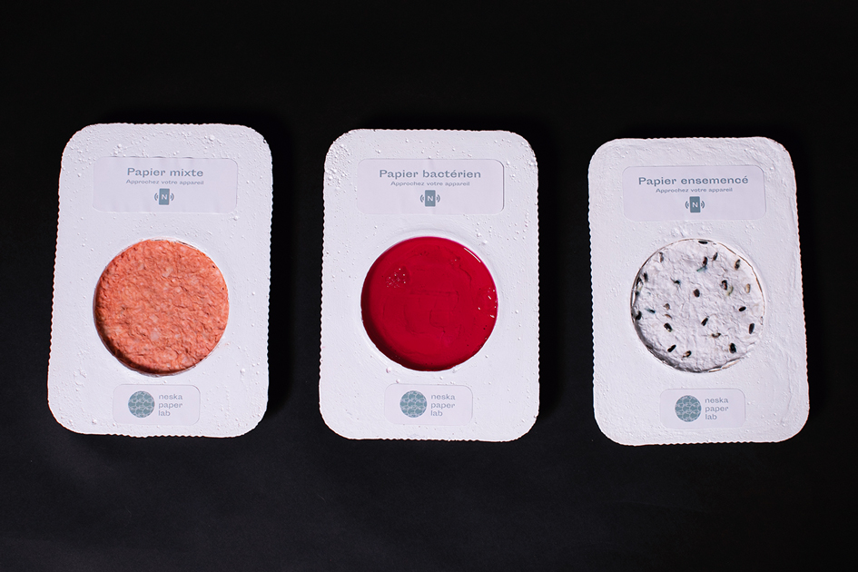

Projet précédent
Clarisse Galasso
NESKA PAPER LAB
OBJET GRAPHIQUE, ÉDITION ET AUGMENTATION NUMÉRIQUE
Le projet expérimental Neska Paper Lab a pour but d’explorer les liens qui existent entre design et vivant.
Le papier est l’un des supports les plus utilisés en design graphique et son industrie représente des impacts environnementaux considérables (déforestation, émission de GES, déchets polluants...).
Ce projet présente à travers un dispositif interactif des alternatives à cette matière première. L'utilisateur est invité à approcher son appareil d'une tablette en plâtre qui contient en son centre une pâte à papier écologique.
Il accède ainsi à des vidéos de médiation qui expliquent le processus de fabrication de ces alternatives aux papier classique.
Une revue complémentaire au projet rend compte de diverses expérimentations pratiques réalisées par le Neska Paper Lab au cours du mois de novembre 2020, afin de comprendre comment les bactéries peuvent fabriquer de la matière.
